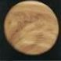
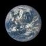
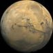

Le dimensioni del sistema solare sono difficilmente definibili; approssimativamente lo si considera come una sfera irregolare con un diametro di circa 80 UA. All'interno del sistema solare lo spazio tra un corpo celeste e un altro non e' vuoto: esso e' permeato dal cosiddetto mezzo interplanetario, comprendente pulviscolo, gas e particelle elementari.
Il Sole ha una particolare importanza sia perche' e' l'unica stella, e quindi l'unica fonte di energia termica del sistema, sia perche' ne rappresenta con ottima approssimazione il centro gravitazionale. La massa solare, infatti, costituisce circa il 99,9% della materia presente nel sistema.
| PIANETI TERRESTRI | Caratteristiche | ||
| Distanza | Massa | ||
|
Mercurio | 0.4 UA | 0,055 |
|  | Venere | 0.6 UA | 0,815 |
|  | Terra | 1 UA | 1,000 |
|  | Marte | 1.6 UA | 0,107 |